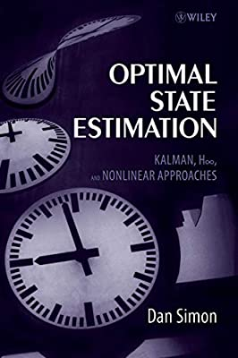
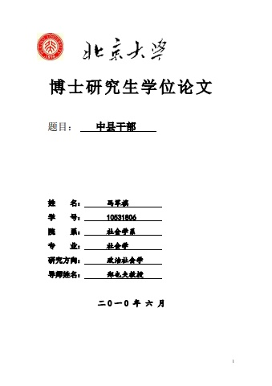

A curated collection of technical and non-technical books I enjoy. Reviews may be added periodically.
State estimation, control theory, and related engineering texts.

History, political science, sociology, anthropology, and more.
